This section offers a guide to the best practices and techniques for authoring with the Xbox Audio Creation Tool (XACT). For a more technical and conceptual overview of XACT, see the XACT Overview and XACT Concepts sections.
XACT attempts to address several recurring problems in audio development on an Xbox console system. The primary goal is to provide a high-level sound management library that is optimized for the audio hardware of the Xbox® video game system from Microsoft®. To this end, XACT provides the following:
XACT is composed of three connected parts:
This section of the documentation focuses primarily on the third part (xact.exe). It will walk you through the various aspects of creating content using the XACT tool, from the viewpoint of a composer or sound designer.
When creating an audio solution for a game, it is important to understand which aspects are in the hands of the programmer and which are the responsibility of the composer or sound designer. To avoid confusion and potential responsibility "clashes," XACT attempts to provide a single way to perform most tasks. Properties and behaviors that are specified in content cannot generally be "overridden" programmatically, and conversely, the composer does not control resource management or dynamic pausing.
When initiating a project, the sound designer and the programmer decide on important cues, or trigger points, in the game. The composer then creates a sound (or perhaps multiple sounds, one of which will be chosen randomly to play) that that cue plays. More details about what a sound consists of are described later in this section. For now, the programmer and the sound designer can go their separate ways.
The programmer's responsibilities:
Meanwhile, the sound designer or composer:
The XACT authoring tool and libraries are included with the Xbox Development Kit (XDK), which can be downloaded each month from Xbox Central (https://xds.xbox.com). Note that there is a Minimum Installation option, which will install all of the audio tools without requiring programming tools such as Microsoft® Visual Studio® to be on your machine.
You should also recover your Xbox Debug Kit or Xbox Development Kit each month with the latest version of the library. If you do not have a debug kit, contact your account manager (or contact content@xbox.com for help in determining who your account manager is). The Xbox Remote Console Recovery Tool, also available on Xbox Central, is an application that runs on your computer (attached by means of a network or a crossover cable to your debug or development kit) and transmits an updated image to your debug or development kit.
When your debug or development kit is recovered, note the program in the XDK Launcher called Audio Console App (AudConsole). This is the basic Xbox-side tool for real-time sound and digital signal processor (DSP) effect auditioning. Also note your XDK machine name and/or debug IP address (listed along the bottom of the Launcher frame). You'll need one of these two identifiers to connect your computer to the XDK for real-time auditioning.
After you have everything set up, you are ready to audition your first wave. Simply follow these steps:
Rebooting your Xbox Debug Kit or Xbox Development Kit will bring up the XDK Launcher. The launcher features a list of applications available for execution on your Xbox. Once you are in the launcher, navigate to the Audio Console Application (AudConsole) by using the controller's left thumbstick or D-pad. Launch AudConsole by pressing the A button. The following screen appears on your Xbox monitor:
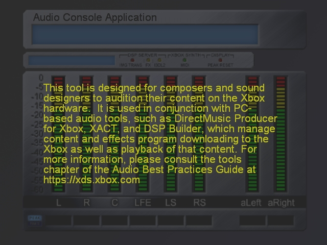
Illustration The Audio Console Application running on the Xbox. When AudConsole is running, it is effectively waiting for information from the computer.
Now that the AudConsole is waiting for information, the next step is to launch XACT. To launch XACT, from the Start menu, select Programs, Microsoft Xbox SDK, Audio Tools, and finally Xbox Audio Creation Tool. The XACT application displays a window that looks like this:
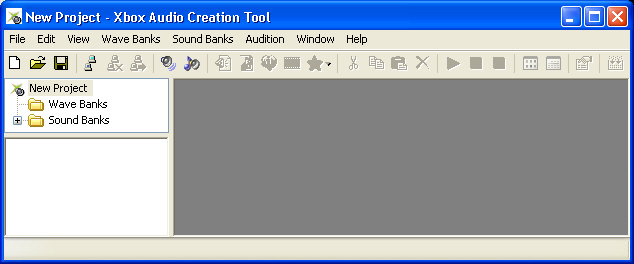
Note that when XACT is launched, it automatically creates an empty project. In fact, XACT will always have a project loaded, whether it is one you created or the default "New Project".
You'll notice that the left side of the window contains a hierarchical view of the project, including the wave banks and sound banks contained in the project. For purposes of this discussion, we're concerned only with wave banks.
You connect XACT to an Xbox by selecting Connect to Xbox on the Audition menu. Upon choosing this option, a dialog box appears in which you can enter the name of the Xbox you wish to connect to:
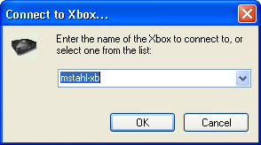
Enter the name of the Xbox you wish to connect to, then click OK. If XACT and the Xbox have been successfully connected, the following screen appears on your Xbox monitor:
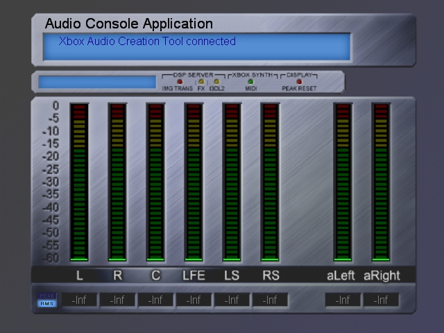
Now that you have established communication between XACT and the Xbox, you are ready to create a wave bank. Navigate to the Wave Banks menu and select New Wave Bank. The following dialog box appears:
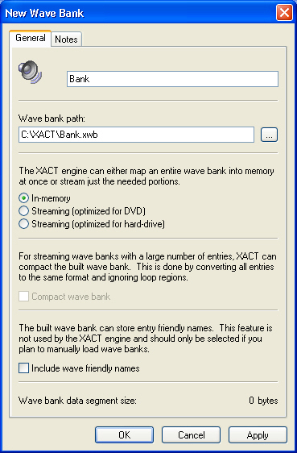
The default name of the wave bank is Bank. You can rename the wave bank by replacing the name listed in the top field of the dialog box with a name of your choice. When you do this, the wave bank's path is updated automatically to reflect the new name. If you want the file name to differ from the name of the wave bank, simply edit the file name in the wave bank path.
This dialog box gives you an opportunity to alter other properties of the wave bank as well, such as whether the wave bank is streaming, whether to compact the wave bank, and whether to include wave-friendly names. These properties are discussed later, so for now you can leave them at the default values.
After you have selected the name and path of the new wave bank, click the OK button. The new wave bank is listed under the Wave Banks folder, and a new wave bank window appears.
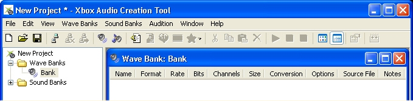
Now you are ready to add a wave to the wave bank. First, make sure that the wave bank window is selected, which you do by clicking on the title bar of the wave bank window. Next, select the Wave Bank menu and select Insert Wave File(s). The following window appears:
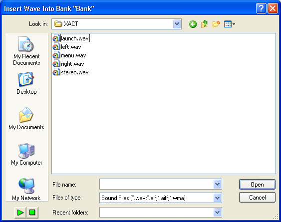
Select one or more wave files to add to your wave bank, then click Open. The wave files you selected are added to the wave bank.
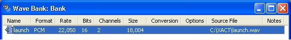
To audition the wave file on the Xbox, first make sure that the wave to audition is selected in the wave bank. Then, select Play from the Audition menu. The wave file is copied to the Xbox and you will hear the audio played back on your Xbox monitor.
Note For large wave files, there may be a perceptible delay the first time you audition the wave. This is because the wave file must be copied to the Xbox before you can play it. This applies only the first time you play the wave.
Now that you have successfully auditioned your first sound, the next step is understanding how to build a wave bank. A wave bank is simply a collection of wave files bundled together into a single larger file. You can specify per wave bank whether it is meant to be used in-memory (where all of the wave data will be loaded into the Unified Memory Architecture) or to be streamed from the DVD or Xbox hard disk (where only the currently playing parts of any waves are in memory, and the rest are read from the DVD as needed).
Note
Streaming options are broken down even further. By default, every wave in a streamed wave bank incurs some latency when you start to play it, because it takes time to seek the position of that wave on the disk and read the data into memory. While the latency can vary based on other processes accessing the disks, how far apart the data to be read is, and so on, hard disk reads generally incur tens of milliseconds of latency. DVD reads are on the order of hundreds of milliseconds. However, you can specify for one or more waves in your wave bank to use primed streaming. With primed streaming, the beginning of the wave is loaded into memory when the bank is first registered. This means the wave can start playing immediately, with ample time for the rest of the wave to be streamed in from the disk.
Note
The process of creating a wave bank is fairly straightforward:
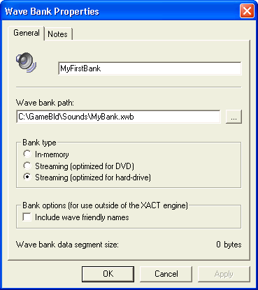
You can enter a name for your wave bank as well as the location where the wave bank will be built. Next, you can choose the type of bank—whether it will consist of purely in-memory waves or if it should be streamed from the DVD or from the Xbox hard disk. The Include wave friendly names check box should be selected only if you plan to use this bank with your own playback engine (not using XACT).
Note Make sure any WMA files you create do not use digital rights management (DRM). If your WMA files use DRM, these files can be played only on the computer on which they were authored.
XACT provides the opportunity to do some basic "compression" on your PCM or AIFF wave data. By right-clicking on an individual wave (or selecting a group of waves), you can choose 8-bit PCM or Xbox ADPCM. If you audition the wave after choosing one of these options, you will hear it with the appropriate compression applied.
Note Your source waves will not be altered; the compression is applied only for auditioning and in the final wave bank creation.
Other options are available on a wave. The primed streamed waves mentioned earlier are also available for a wave or group of waves by means of the Enable Zero-latency Streaming command on the wave's shortcut menu, or by means of the property window that opens when you double-click a wave. If a wave was imported with loop points, these are retained by XACT. If you know you will never hear the wave data beyond the end loop point (that is, you don't intend to use a release envelope), you can click Remove Loop Tail, again per wave, which will reduce your wave data size.
The last step to using a wave bank is to build it. When XACT builds a streamed wave bank, it automatically sector-aligns waves in a streamed wave bank to ensure optimized streaming performance. To build your wave bank(s), on the File menu, click Build (or press F7). Or you can just wait until you've finished creating the sound bank as described below, and both will be built together.
Note Wave banks are generated from your original wave content every time you build the bank. So it's perfectly acceptable to keep editing your source waves using the sound editing tool of your choice. To keep the view in XACT current as far as file size and format, you can occasionally re-scan your wave bank entries (SHIFT+F5). Wave bank entries are also automatically re-scanned whenever the wave bank is built.
It is possible to build very large wave banks (over 1 MB). At production time, however, these files can be difficult to lay out on the DVD. See the Tips for Laying Out an Xbox Game Disc section for more information on managing large files.
The next step is to construct sounds and cues, which sound banks (.xsb files) comprise. Remember, cues are what the developer plays. With the possible exception of one global sound property (namely categories, which will be covered shortly), the developer does not need to know anything about the sound or sounds that a cue uses.
First, create a sound bank, much as you created a wave bank. On the Sound Banks menu, click New Sound Bank to open the following property dialog box:
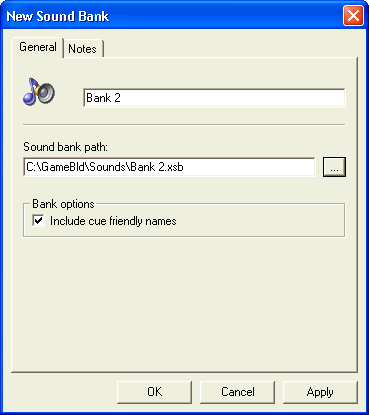
For now, keep the Include cue friendly names check box selected. Later on, your developer can refer to cues solely by their indices (numeric values), in which case this check box could be cleared to save some space in the file. Particularly for sound banks that have large numbers of cues (for instance, dialogue in a sports title), using indices optimizes performance as well, because no string lookup is required.
When we click OK, the Sound Bank window opens. The window consists of four frames.
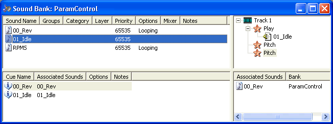
Illustration The Sound Bank window. The upper left frame displays the sound bank's sounds. The upper right frame displays the events for the currently selected sound. The lower left frame displays the sound bank's cues. And the lower right frame displays the sound or sounds with which this cue is associated.
As shown in the upper right frame, a sound is composed of one or more tracks. Each track can contain a single play event, as well as any number of other events (such as markers and filter sweeps). Each track of a sound plays only a single wave at any given time. For polyphonic sounds, you can create multiple tracks, each with its own play event (and again, each with as many other non-play events as you wish). Because the Audio Console Application limits the number of concurrent streams coming from the hard disk to 50, no more than 50 tracks should be added to a sound.
This example starts by creating the most basic sound, one that simply plays a wave. XACT provides a quick shortcut for this: Simply drag a wave from a wave bank into the upper left frame of the sound bank. (Otherwise, you could create the sound manually by clicking New Sound on the Sound Banks menu, or by pressing CTRL+D.) This creates a sound with the same name as the wave. The sound has one track with one play event, and the play event plays this wave.
Note Sounds can be even more basic and consist of nothing at all. This is useful if you ever want to use a "silent" cue, or have not yet implemented sounds for your cues but want them integrated into your game.
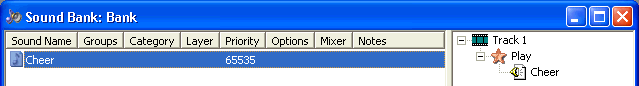
Illustration The sound "Cheer" as created from a wave of the same name.
You can organize sounds in three ways:
If your sound is intended to be 3D positioned by the developer, make sure to check Enable 3D from the 3D Properties tab of the sound's property page. The tab is available (and the sound can only be 3D positioned) only if the wave that the sound plays is mono. A 3D-positioned wave is auditioned as if it were in front of the listener, sending to the environmental reverb as well as to the 3D position. The most commonly needed adjustments to the default properties are minimum distance before rolloff and rolloff factor.
Note Sounds with a different set of 3D properties that are played onto the same sound source need to use an additional hardware 3D voice.
The I3DL2 and LFE sliders on the 3D Properties tab of the sound's property page apply to the sound source, rather than the sound itself. So, if you set the I3DL2 send for one sound playing on a particular sound source, and then use a different slider setting for another sound playing on that same sound source, the first one's setting is overridden.
So you've created a sound that plays a wave. The last step is to create a cue that triggers this sound. Remember, the cue is what the developer is going to play. Again, XACT provides a few shortcuts. First, if you drag a sound into the lower left frame, XACT automatically creates a cue for it. Make sure you drag into an empty area, because this same drag action is used to replace the sound that an existing cue is associated with. Or as a super-shortcut, you can drag a wave into the lower left frame, which automatically creates both a sound playing the wave and a cue that plays the sound.
Opening up the cue's property window and clicking the Layering tab allows you to specify how this cue interacts with other cues playing sounds on the same layer. Remember that you assign layers to sounds, not to cues. But you assign the interaction (for example, whether the new sound waits for the previous one to complete, or causes an immediate crossfade) to cues. As with sounds and waves, you can audition cues by highlighting them and playing them, either from their property window or by clicking Play in the main XACT toolbar.
You now have a cue and a sound. You can build and deliver your wave bank and sound bank to the developer by clicking Build on the File menu.
A sound consisting of a single wave isn't going to make for particularly interesting audio. If you use multiple waves to create composite sounds, the real-time processing power of the Xbox Media Communications Processor can make all of your sound effects more complex and realistic than a single wave file.
As discussed previously, each track allows for a single play event. However, the play event need not occur at the moment the sound is fired. Opening up the play event's property window (by double-clicking on it), you'll notice a Timestamp, in seconds box. Similarly, every other event allows you to schedule the play even for any time during the playback of the sound.
For example, you could slowly pitch shift the wave up. To do this, right-click on any event in a track, click Add Pitch Event, and a pitch event dialog box appears:
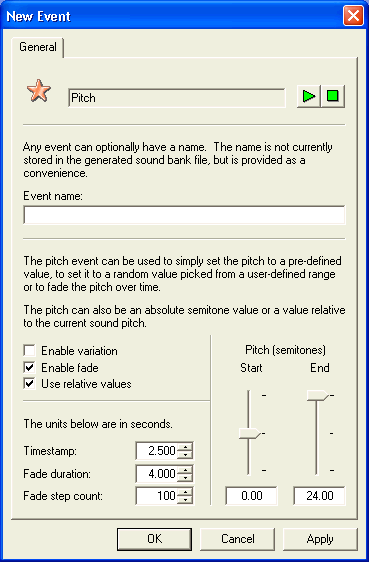
Illustration A pitch event that, starting at 2.5 seconds into the sound's playback, sweeps the pitch up two octaves over 4 seconds. The step count indicates that the pitch changes occur every .04 (4/100) seconds. Use of relative values means that the pitch shift is relative to the sound's current pitch and not necessarily to the wave's original pitch. Otherwise, the pitch adjustment would trample any previous pitch changes.
Similar events are available for all of the Xbox hardware parameters—for voice filter sweeps, low frequency oscillators, envelopes, and so on. There are also events for volume sweeps, speaker assignments, markers that a developer can use to mark the position in the cue, and stop events (for stopping a playing wave at some predetermined time).
You can also create as many additional new tracks as you like, either by clicking New Track on the Sound Banks menu, or by dragging a wave into the upper right frame of the sound bank window. Again, each track supports a unique play event, and all of the other events placed on a track modify only that track's waves.
XACT cues are a bit more interesting than sounds, but still repetitive. Every time the cue is triggered, you're going to hear the same sound, which is composed of the same sequence of waves and other events. Let's add some basic variation to our sound and cue.
You'll find the simplest form of variation for a sound in the Mixer tab of its property window. Here you can set pitch and volume variation for a "simple" sound—one that consists of a single track. These settings will be applied across any waves that the sound plays. However, remember that they are applied additively with any per-wave pitch or volume settings that you specify. Consequently, relative volume and pitch will still be intact within a sound.
Many of the individual events have their own variation functionality. For example, if you have multiple tracks, each track's play events supply similar settings to those in the Mixer tab of the sound. And numerous other events have an Enable variation check box, which turns their range sliders into variation ranges.
Of course, even more useful than randomizing how a wave is manipulated is choosing between several different waves for playback. You can drag multiple waves onto a play event to create wave variations. Every time this play event is encountered, a wave will randomly be chosen from the list. You can also weight the list of waves by means of the play event's property page (click Weight), so certain waves are played more or less frequently than others.
Getting a bit fancier, a looped play event that uses waves from a streaming wave bank will automatically—and with sample accuracy—start playing a new wave as soon as the currently chosen variation completes. This works well for non-repetitive music and ambience. The main restriction for this functionality is that all of the variations must be waves of the same format (sampling rate, channels, compression, and so on), and they must be streamed.
To add even more variability, a cue can randomly choose between multiple sounds, again with weighting. The easiest way to add sounds to a cue is once again to drag them into the lower right frame of the Sound Bank window. You can also add sounds individually by means of the cue property window (the Add button in the General tab), or you can replace the current associated sound(s) by dragging the sounds onto the cue itself. As with play events in sounds, you can assign the weighting for a cue's sounds from the cue property window.
Note In the sound cue properties dialog, if you modify the sound list, you must click Apply before you can edit the transition properties.
The ability of cues to choose randomly between multiple sounds is one reason that layers are assigned to sounds rather than to cues. For example, a hockey title has a cue called "YellAtRef." The cue is associated with ten sounds, each of which is a single irate fan (perhaps with multiple variations within each sound). Now, there is another cue, called "YellAtPlayer," in which the same voice talent has nice things to say about a favorite player. Because the layer is assigned to the sound, and not to the cue, if for some reason a character was yelling at the referee, and then the same character yelled at the player, you wouldn't hear the same fan saying two things at once (assuming you assigned both of that fan's sounds to the same layer). Conversely, if the YellAtRef and YellAtPlayer cues picked two different fans, they would not cut each other off.
Now that you've completed your wave banks and sound banks, you can give them to the developer to get a first pass at integrating audio into the game. Delivering the sound bank and wave bank files is generally sufficient. However, if the developer wants to use cue indices rather than friendly names, make sure you build with the optional Build Project Header check box selected. (This is the same option to use if your game uses wave banks without using the XACT engine.) You might also want to choose Build Cue List, which creates a text file listing which cues you have delivered (along with any comments you added in the property window for each cue's Notes tab).
One file that hasn't been discussed yet is the XACT project file (.xap), which is basically a text listing of everything in your wave banks and sound banks. Archive this file in case changes are required later in the project, since developers may want to use this file to regenerate at least your sound banks in subsequent XDK releases. Because the sound bank format can change from month to month, developers should rebuild them with each newly released build of the XDK library. A command-line version of XACT enables developers to regenerate sound and wave banks without needing to use the tool (or open the project file).
After you have created a bunch of cues and sounds, it would be really useful to hear how they interact with each other. Does the dialogue cut through the ambience? Are the gunshots too loud? There are several ways to accomplish this. For instance, you could manually audition each sound yourself, watching the volume levels in the Audio Console application, and opening up each sound's property window to adjust its volume individually. However, it's often easier to hear multiple sounds played at the same time, especially in the context of the game. There is a solution. If the game is compiled with the instrumented XACT library, you can mix your sounds in-game in real-time using the Mixer Window.
Mixer Windows are available for each Sound Group. Right click on a sound group and choose Open Mixer Window to see that group's mixer window. There are volume controls for each sound in the group, as well as a 'Master' group volume control (the first slider) that will be additively applied to all other sounds in the group.
In the "Simple" view, you have simple volume sliders for every sound. These sliders are "live" and applied as the sounds are played. Switching to the "Complex" view, you get a bit more information, such as the ability to change each sound's parametric EQ settings and the ability to manually audition the sound. The play cursor will flash if the sound is currently being played (either by means of manual audition, or by the game itself, running on the Xbox).
Note These functions are also available in the Mixer tab of each sound's property window. The Mixer Window just brings them all together in an environment more conducive to audio level mixing.
After you're done mixing your game, rebuild your sound bank with these new audio settings and give them to your developer. Even though you were auditioning them "live" in the game, the settings themselves are still only present in the XACT tool; they weren't being written to the banks on your debug kit's hard disk or anything along those lines.
Using the Audition Monitor window, you can see exactly what cues are playing when, as well as how your Xbox system resources are being utilized. The window also replicates the 5.1 digital and stereo analog volume monitors from the Audio Console application so that you can monitor your in-game audio levels without needing the developer to add volume monitor bars.
Note Shared code used by all of the XDK audio samples demonstrates a quick implementation of such on-screen volume monitoring, if a developer wants to use it.
The Audition Monitor enables you to see when an unexpected cue might be called, as well as if there is one cue that for some reason never stops.The resource monitoring aspects of the Audition Monitor can be useful for determining how many voices you're using (and if you're getting close to running out). If you notice that your streaming audio is breaking up, note how many streams are playing simultaneously as well as where they are located relative to each other on the game disc or on the Xbox hard disk.
Note The memory used box is generally only useful if you are playing content exclusively from in-game; any auditioning from the computer tool causes memory use to increase as temporary wave banks, sound banks, and cues are dynamically created.
A natural first question is whether to play sounds from in-memory, streamed from the Xbox hard disk, or streamed from the game disc. Let's cover some of the basic differences between these techniques, as well as how they effect Xbox resources.
In-memory waves are fully loaded into memory when the developer registers the wave bank. As such, there's a one-to-one correspondence between your wave bank's size and your memory footprint. On the positive side, no disk bandwidth is incurred once the wave data is loaded, and wave looping is performed in hardware, so no CPU hit is incurred once the wave starts playing.
Streamed waves reside on the Xbox hard disk (even when the developer registers them) until they are played back. The exception is that any waves marked for primed streaming (or manually primed by the developer by means of IXACTSoundBank::Prepare) have several packets read into memory: three for non-looped waves and four for looped waves. For non-primed streamed waves, playback uses two packets for non-looped waves and three for looped waves. The size of these packets depends on what the developer specifies in dwPacketSizeInMilliSecs and on the specific format of the individual wave. The packet size is rounded up to the nearest "sector size" (512 bytes for Xbox hard disk wave banks, 2048 bytes for DVD wave banks).
Note The memory footprint does not vary with the length of the wave, so your waves can be as long as you want.
The read-ahead size needs to be larger for the DVD (because seek time is so much slower), so any streams from the DVD incur a larger in-memory footprint than streams from the Xbox hard disk. For this reason, the DVD is generally used for several non-primed streams (perhaps 5.1 music, ambience, and dialogue), and the Xbox hard disk is used for both primed and non-primed streams.
Note Several titles have successfully used the hard disk for all of their audio playback (music, sound effects, dialogue, and so on), without using the DVD or in-memory wave banks at all.
Xbox hard disk bandwidth is more limiting than memory footprint, however. Remember that the Xbox hard disk drive head must have enough time to seek to the wave and read in the next packet(s) of audio data for each wave that is playing. If other aspects of the game are using the Xbox hard disk and/or game disc, the bandwidth available for audio streaming, of course, decreases. You can maximize bandwidth by ensuring that all of the required data resides in the same vicinity on the disk. For this reason, it's recommended that your streamed waves for a particular area of a game reside in a single streamed wave bank (or at least in adjacent wave banks).
Streamed and in-memory waves have a few basic functional differences:
Note If the loop count is changed while the sound is playing, the change does not take effect until the next time the sound is played.
Some kinds of sounds inherently require run-time control to function. For instance, a car engine is going to need to adjust its waves and respective pitches based on gear, RPM, and so on. Rather than force the developer to implement how these values relate to sound behavior, the content creator can present run-time parameter controls (RPCs, also known as "sliders") that dictate how content responds.
RPCs are currently available per sound, and an RPC's parameters can be applied with different settings per track in that sound. By opening a sound's property window to the Parameter Controls tab, you can see the list of RPCs your content exposes to the developer. To add a new RPC, click Add, which displays the following dialog box:
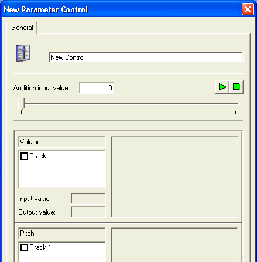
Illustration The run-time parameter control dialog box.
The top text box is where you can specify the name of the parameter as the developer will see it (similar to cue "friendly names"). Below the top text box is a slider control through which you can audition this run-time parameter control in real time. And below the slider control are the three settings that you can currently specify per track: volume, pitch, and filter cutoff.
As a quick first example, suppose you have the sound of a sword hitting a shield. You want to control the sound's behavior based on how hard the hit is. To do so, provide a run-time parameter control to the developer called "Force" or something similar. If the force applied is large, you want the sound to be louder and the filter to be opened up more. If the force applied is small, you want the sound to be quieter and the filter to be closed (so the sound is more muffled).
First, enable the slider's control over volume and filter cutoff by checking the corresponding boxes for Track 1:
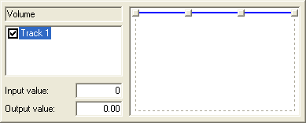
Illustration A close-up of the enabled volume parameter for this RPC.
The grids to the right become enabled and display four points. You can now grab these points and drag them around to create an arbitrary curve. Look at the Input value and Output value text boxes to see what each point corresponds to. Again, you want volume to increase as the force increases. Let's start at −8 dB and then ramp up to full scale.
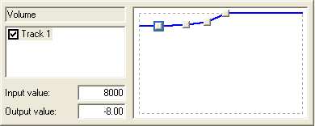
Illustration A mildly logarithmic-looking volume fade curve. Note that output value for volume ranges from
Note The range of the RPC (the "input value") is from 0 to 65535. So the developer is going to need to translate his or her "force" value (which might be on some other arbitrary scale, perhaps 0 to 1) to this range.
Do the same for the filter cutoff curve. For the sake of demonstration, do a slightly more dramatic and less smooth sweep.
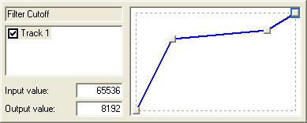
Illustration A possible filter cutoff curve. For very weak hits, the low pass filter cuts the wave off at nearly 0 Hz. Stronger forces open up the filter cutoff, and extremely high force open up the filter all the way to 8192 Hz.
You can place the four points in absolutely arbitrary positions; there is no rule that says a curve has to constantly move up or down. You could now audition this run-time parameter control by means of the Play button at the top of the page. Move the slider around to hear the volume and filter cutoff adjust in real time, just as they do for the developer.
RPCs become really interesting when you can apply them to multiple waves simultaneously. Again, each RPC is attached to a single sound, so you're going to need to create a sound with multiple tracks. Consider an example in the form of a car engine. You have five different loops for the different gears. Then, each loop is pitch shifted up as the RPMs increase.
Note This will be demonstrated in an upcoming XACTParamControl sample in the XDK.
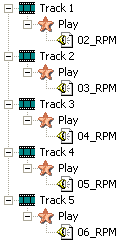
Illustration The event list window for the engine sound. Initially, it just plays all five RPMs at the same time.
So you're going to have two different run-time parameter controls acting on your sound:
You create the sound with five tracks, one for each of the five RPM settings. Then, you return to the Parameter Control tab of the Property page and add a "Gear" parameter. Note that this time, you see five tracks listed in the parameter control dialog box. Each one has a unique curve, displayed in a different color. Of course, if there's one track that you don't want to affect here (perhaps the in-car ambience, for instance), you just uncheck that track and the RPC won't influence it. As the gear slider goes up, you want to crossfade between the waves. So the curves might look something like this:
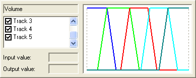
Illustration The volume curves for each track of the "gear" RPC. The curve whose points you can see is the lowest RPM track (track 1).
After clicking OK on that parameter control dialog, you do the same thing for RPMs. Remember that within a single gear, you're only going to hear one track, but as the RPMs go up, you might want to use a slightly different pitch curve for each track. When you're done, you might have something like this:
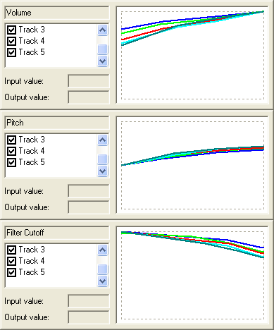
Illustration The curves for the five tracks that the RPM slider influences.
You can audition either of these settings individually, though not currently at the same time. This means that you'll either hear all five engine loops simultaneously (while you audition RPMs) or one engine loop at a time at constant pitch (while you audition the Gear slider). Testing multiple simultaneous sliders is a planned future enhancement.
XACT interactive audio cues enable controlled transitions between sounds, a step beyond the transitions within sounds achieved with run-time parameter controls. A complex set of music transitions defined by the content author can be controlled at run-time with a single trigger variable, set by the game, which causes sound transitions to occur. The transition states, effects, delays, and so on, as designed by the content author, are handled automatically by the XACT engine. Multiple interactive cues can be playing at one time, based off of the same or different trigger variables, enabling a rich combination of transitions. For example, crowd noises could transition between frantic cheering, booing, and stunned silence, while the background music transitions between scores, both based on the ebb and flow of the battle scene.
Interactive audio cues are enabled by simply checking the Enable interactive audio transitions option on the Interactive Audio tab in a cue's property window, as shown here.
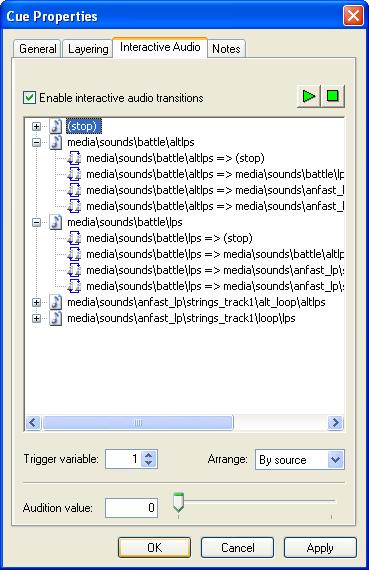
Illustration An XACT Interactive Audio Cue
A thorough description of XACT interactive audio, from both an authoring and development standpoint, can be found in the Introduction to XACT Interactive Audio Features white paper.
The XACTInteractiveAudio Sample in the XDK provides a sample XACT project with an interactive audio cue, and a sample program that uses that cue.
This section provides a complete list of the available track events, as well as the properties of each event.
The Play event is the fundamental event needed to start the sound playing.
The following is a list of properties for this event:
The Stop event allows the content designer to specify the stop time (instead of forcing the programmer to do it). This might be useful if the content designer has an in-memory looping wave/sound that they want to play for three seconds and then stop. Also, the stop event can specify when to invoke the release envelope. Stop doesn't always simply halt the sound output. If there's a release envelope, it will be triggered, which may cause the volume/pitch/filter cutoff to fade out slowly.
The following is a list of properties for this event:
The Volume event is used to set and optionally fade the playback volume of a sound.
The following is a list of properties for this event:
The Pitch event is used to set and optionally fade the playback pitch of a sound.
The following is a list of properties for this event:
The MixBin event is used to set mixbin assignments of a sound.
The following is a list of properties for this event:
There are two fundamental rules to keep in mind when making the assignments:
When the MixBin Pan event is processed by the engine, a random azimuth is selected from within the given range and mixbin levels are calculated to simulate 2D (x- and z-axis) positioning of the sound. This event is intended primarily for randomly occuring ambient sound effects.
The mixbin pan event does not calculate distance attenuation, Doppler pitch, or any of the other standard 3D audio parameters. It is simply used for positioning. Any volume or pitch must come from other events in the track.
Because this event internally calls SetMixBins on the DirectSound voice, a mixbin pan event and a standard mixbin event will overwrite each other. If two appear in the same track, whichever is processed last will take priority.
MixBin Pan events can be added only to a track that plays mono waves. Multichannel waves cannot be added to a track that has a MixBin Pan event associated with it.
The following is a list of properties for this event:
The following is a list of properties for this event:
The following is a list of properties for this event:
The following is a list of properties for this event:
The following is a list of properties for this event:
The following is a list of properties for this event:
It is important to note the difference between loop start events and looping play events. Looping play events only loop the wave itself; other events in the track are not looped. A loop start event will loop the track when the last event is processed or the wave ends playback, whichever occurs last. This means that using an infinite loop will cause the track itself to never loop, because the play event never completes.
The following is a list of properties for this event:
A Marker event will generate a marker notification in the XACT engine. Track events happen at a particular time, but a Marker event can be set up to recur on a timed interval.
The following is a list of properties for this event:
The following is a list of properties for this event:
For more information about XACT, see the following topics.